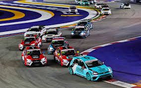

Автоспорт
Новини сайту
Чемпіонати
Придбати запчастини
Про нашу діяльність
Контакти
Шо таке автоперегони?
Автомобі́льні перего́ни (також автоперегони, автогонки) — категорія змагань (група дисциплін) в автомобільному спорті, у якій учасники змагаються у швидкості проходження траси на автомобілях.
Як все влаштовано
Щоб брати участь у професійних змаганнях, треба пройти певне навчання та отримати ліцензію. Вони бувають декількох рівнів — для національних змагань, міжнародних тощо. Ліцензія для національних українських змагань коштує близько 1000 грн, видається на один рік і слугує членським квитком в Автомобільній федерації України. ФАУ є офіційним організатором всіх змагань в нашій країні, які мають міжнародну акредитацію.
